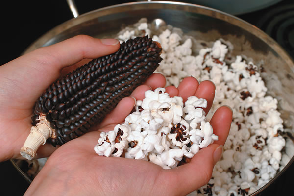

Corn (Zea mays), or maize, as it is called in many parts of the world, is one of the most diverse treasures bestowed upon us by our farming ancestors. Over the centuries Mesoamerican farmers, beginning in the Oaxaca Valley of Mexico, slowly created the plant we now recognize as corn??starting from a short, nondescript grass called teosinte, which bears just a few seeds surrounded by extremely hard shells. Corn has been grown extensively in North America for more than a millennium and has since spread throughout the world, becoming one of the most widely grown crops on the planet, second only to wheat.
Given the productive nature of corn, which is capable of providing hundreds or even thousands of edible kernels from a single seed, its no wonder that the crop found a place in the cultural and spiritual traditions of many indigenous peoples. But heirloom corn varieties are endangered today. U.S. agribusiness produces more than 12 billion bushels of corn per year on 80 million acres of land to supply our industrialized food system with inexpensive animal feeds, sweeteners and other products. Most of the corn used for these purposes comes from modern hybrid and genetically engineered varieties that have been bred for maximum yields rather than flavor or nutrition, and that are dependent on environmentally damaging synthetic fertilizers and toxic pesticides.
The corn I am in love with is the traditional kind of corn; the sacred corn of ancient farmers; the corn that is adapted to grow with low inputs and in difficult conditions; the corn that comes in a spectacular rainbow of colors and various sizes and shapes, each representing the work of hundreds of unsung farmer-breeders. These rare heirloom corns offer home gardeners history, beauty and outstanding flavor. Two great ways to enjoy these delicious flavors are by traditional cooking methods??popping (roasting in oil) and parching (dry roasting).
Popcorn is one of the most ancient forms of corn??ears more than 5,000 years old have been discovered in New Mexico caves. Popcorn varieties are flint corns, which have a hard shell that protects the starchy, slightly moist embryo inside. When the kernel is heated above 400 degrees, the moisture inside expands, causing an explosion that pops it.
If youre looking for movie theater-quality popcorn, grow Robust 128YH, which is a high-yielding, gourmet corn with glossy yellow kernels. For a denser and chewier, though slightly less productive variety, try Japanese Hulless, an open-pollinated (OP) type that, as the name implies, leaves little of the hulls attached after popping.
The benefit of growing an OP variety is that you can save your own seeds for planting the following year, and they will reproduce true to type, unlike a hybrid. Recent research suggests the many-hued traditional corns pack additional nutritional properties. For the adventurous, there are dozens of interesting popcorn varieties available in a broad array of colors and sizes, from 4- to 6-inch Dakota Black to 2-inch Strawberry (see Recommended Varieties on Page 115 for more suggestions).
Although popcorn is one of Americas favorite snack foods, most of us have never tasted parched corn. Instead of the hard-shelled flint types used for popping corn, parched corn is usually made from the softer-shelled flour varieties. These corns open more gently when heated, slightly enlarging and softening, while becoming chewy and crunchy, with a rich corn flavor. Native Americans parched dried ears on sticks or in clay pots over hot coals. They used the parched corn as trail rations and pounded it into meal for use in bread and soups. When European settlers came to America, they adopted the practice and added parched corn as a staple to their diet.
Any flour corn can be ground to make corn meal, or parched by heating the kernels over medium-low heat in a dry skillet, without oil. Within about five minutes, the kernels should start to swell and split.To avoid burning, be sure to keep them moving by stirring or shaking the pan. Its always wise to hold a lid or screen over the kernels to keep them from popping out.
To parch corn in a microwave, put about a quarter cup of corn on a paper plate, cover with another paper plate and cook on high for two to three minutes, until most of the popping stops.
The best corns for parching cook quickly and completely, expand more, have thinner skins, are more resistant to burning and have distinctive, delicious flavors. Two varieties known for their excellent parching qualities are Supai Red, which has its origins with the Havasupai tribe of the Grand Canyon, and Magenta, a selection from a Hopi variety. Sahuarita and Hopi Pink are also reported to be good for parching (see Recommended Varieties on Page 115 for more about these parching corn varieties).
My own introduction to parching corn came when I met Emigdio Ballon, a native of Bolivia (below), as?I was photographing seed varieties in southern New Mexico. Emigdio pulled a small bag of corn from his pocket, popped a few corn kernels into his mouth and held out the bag in his weathered hand. I gratefully took a few and placed them in my mouth expecting something salty and hard like a corn nut. What I experienced was more chewy than crunchy. The parched corn released a rich and slightly sweet corn flavor. After proudly explaining that this type of corn was indigenous to his people of the high Andes Mountains, Emigdio insisted that I take a handful with me. I found the parched corn quite satisfying and sustaining as the day progressed; I was hooked. Id always loved corn, but this was different; parched corn is somehow more about the essence of corn itself.
After I discovered parched corn, I met plant breeder Carol Deppe, author of Breed Your Own Vegetable Varieties, who, with Alan Kapuler of Peace Seeds in Corvallis, Ore., has done the most extensive research on parching corn. Deppe tested more than 200 varieties of corn in the mid-1990s to find those varieties most suitable for parching, and to identify varieties suitable for reintroduction. She found the best parching corns were the flour varieties that are usually red, red-striped, lavender, pink or purple, though not all corns of these colors are necessarily good parching corns. Working with Kapuler, Mark Millard, who is the U.S. Department of Agricultures corn curator, and five cooperating seed companies, Deppe identified and reintroduced a number of good parching corn varieties. Additionally, Deppe, Kapuler and Seeds of Change reselected Supai Red and Magenta specifically for excellence as parching corns, as well as for their ear size and hand-shelling ease.
While many modern corns are bred specifically for popping, there is much we can all do to identify the best flour corns for parching and resurrect this venerable and delicious tradition. Although some of these native corns may be regionally adapted to the southwestern United States and Mexico, Ive had good luck with many Hopi and other varieties in my garden in Maine. Use these tips to grow and harvest your own heirloom corn:
Planting. For the best pollination and fullest ears, plant corn in blocks, spirals or clusters on hills, rather than in long rows. Be sure to keep at least 1 foot between plants.
Three Sisters. Try planting a Three Sisters garden of corn, beans and squash. First plant the corn seeds, then sow a few pole beans among your corn once it reaches 8 inches tall. The corn provides a trellis for the beans, while the bean vines prevent the corn plants from falling over and add nitrogen to the soil. Plant squash or pumpkins around the corn patch to shade the soil from sun and suppress weeds. A thick mat of squash vines also can deter raccoons and other animals from entering your garden.
Growing. Some popping and parching varieties require a long season to mature. In short-season areas, choose varieties that require fewer days to mature (see details at right). Or try starting plants in the greenhouse three weeks before your last frost, then transplant them when the danger of frost has passed and the soil has warmed.
Water. To develop strong root systems, irrigate deeply about once a week.
Weed. Control weeds and conserve soil moisture with deep mulching.
Feed. When plants are 6 inches tall, apply rotted manure, grass clippings or a liquid fish fertilizer to provide nitrogen. Repeat the process when they reach about knee high. Experiment with traditional varieties to learn their needs in your climate and soil.
Pests. If earworms are eating more than their share, wait until the silks begin to turn brown and try applying a few drops of mineral oil where the silks emerge from the husk. Under extreme pest pressure, Bt (Bacillus thuringensis) is a useful organic control.
Drying. If possible, allow the ears to dry on the plants until the husks become brown. If this is not possible because of wet weather or impending frost, harvest the ears and dry indoors by spreading them out at room temperature in a place with good air circulation. Dont apply excess heat as it can cause uneven drying or overdrying, which will affect the corns pop-ability. Flour corns are very susceptible to molding after harvest, so be sure to dry the ears immediately after harvesting. If the moisture content of the kernels is too high, they wont parch properly. Youll be able to tell that the ears arent dry enough if the kernels dont come off easily when you try to shell them, or if the bases of the kernels break off and remain on the ear.
Husking. Separate the kernels from the cobs and remove any remaining material (chaff) by winnowing with a fan or in the wind. Pour the kernels from one bowl to another until the chaff has blown away and the seeds are clean.
Storing. Store the cleaned seeds in a tightly sealed jar or other container, and keep it in a cool, dark place. Whole parched corn should keep for at least a month at room temperature. If your corn is not popping well after its been stored for a while, try adding a tablespoon of water to a loosely filled jar of corn and shaking it every day for a week to add moisture.
Eating. For a fresh taste and healthy snack, once your corn is popped or parched, try adding brewers yeast, herbs or chili powder instead of butter and salt.
|
JOHN HIMMELMAN The ‘Dakota Black’ corn variety pops to a bright white with dark markings. Its nearly black, pointed seeds grow on 4- to 6-inch ears. |
 JOHN HIMMELMAN ‘Supai Red’ |
‘Hopi Pink’ |
|
‘Strawberry’ |
|
|